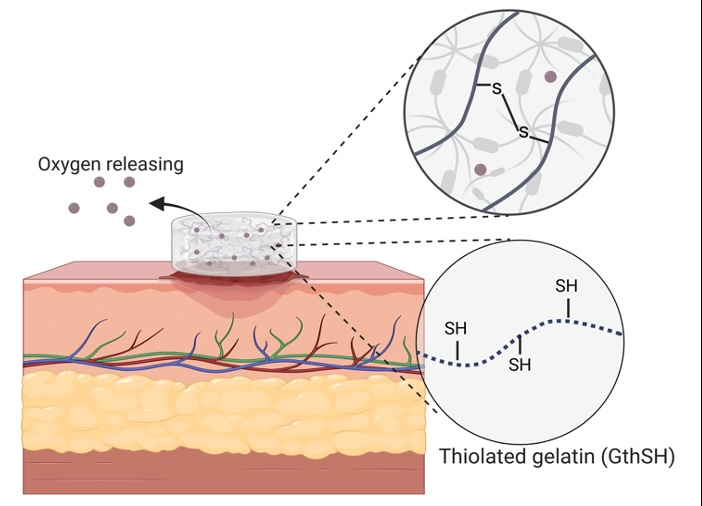
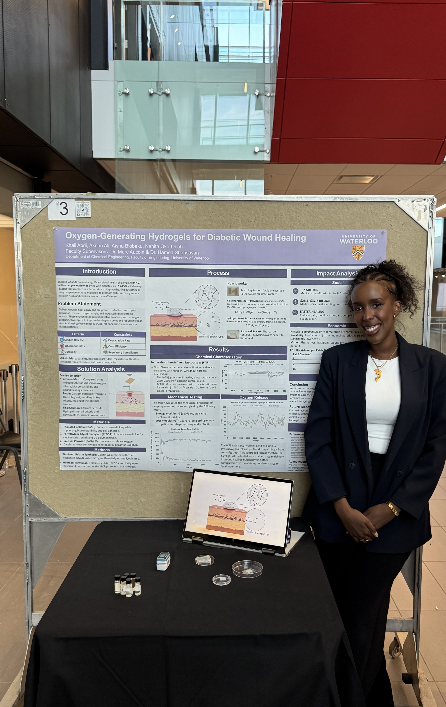

Final Year Capstone · Department of Chemical Engineering, University of Waterloo
Diabetic wounds heal slowly and get infected easily, largely because poor circulation starves the tissue of oxygen. This project designed a hydrogel that generates its own oxygen at the wound site. It is sustained, controlled, and affordable enough to actually reach the patients who need it most.
The problem
Diabetic patients have poor circulation, which starves wound tissue of oxygen — and oxygen is essential for collagen production, tissue repair, and immune defense. Existing treatments like hyperbaric oxygen therapy only offer a temporary rise in oxygen pressure and carry real risks: barotrauma, oxygen toxicity, and seizures. Nearly 15% of Medicare beneficiaries present with a wound or infection, and diabetic infections cost the U.S. system $96.8 billion in a single year. We set out to design a hydrogel that generates oxygen continuously, locally, and safely at the wound site itself.
Design criteria
| Criterion | Target |
|---|---|
| Oxygen release | 20–30 mg/L/day, sustained for 48+ hours |
| Biocompatibility | Low cytotoxicity in in-vitro viability assays |
| Wound healing efficacy | 25% reduction in healing time vs. traditional treatment |
| Moisture retention | ≥80% of initial moisture retained over 24 hours |
| Infection prevention | 90% reduction in bacterial growth |
On top of these, the solution had to stay under $10/unit to produce, remain stable for 6+ months in standard storage, and meet ISO 10993 biocompatibility standards — accessibility and cost were design constraints from day one, not an afterthought.
The design
The hydrogel matrix combines thiolated gelatin (GtnSH) with polyethylene glycol diacrylate (PEGDA), crosslinked under UV light via Michael addition between the gelatin's thiol groups and PEGDA's acrylate groups. Calcium peroxide (CaO₂) is embedded as the oxygen source: on contact with moisture, it decomposes into hydrogen peroxide and then, via catalase, into oxygen and water. Catalase does double duty here, and without it, the hydrogen peroxide byproduct would be cytotoxic to the wound tissue we're trying to heal.
We tested three CaO₂ concentrations (0.25, 0.5, 0.75 wt%) and capped the upper bound at 0.75% specifically to stay under the cytotoxic threshold of 50 mg/L while still hitting therapeutic oxygen levels.
Results
| Measure | Result |
|---|---|
| Peak dissolved oxygen | ~86%, sustained over several hours in a cyclical release pattern |
| Storage modulus (G') | 1075 Pa — mechanically stable under wound-site deformation |
| Loss modulus (G'') | 153.6 Pa |
| FTIR | Confirmed successful thiolation (S–H stretching, 2550–2600 cm⁻¹), no disruption to gelatin structure |
| Cost per patch | $0.55 (1 cm²) to $8.80 (16 cm²) |
Control comparisons made the case clearly: CaO₂ alone in solution spikes and stabilizes fast, with no sustained release. It's the hydrogel matrix that turns a fast uncontrolled reaction into the slow, cyclical release a wound actually needs. The structure isn't incidental; it's the mechanism.
Recognition
The project won a Departmental Award at Waterloo's 2025 Capstone Design Symposium, one of six winning teams that year. What stuck with the team most was talking to stakeholders who each had a personal connection to diabetes, which is what pushed the group to keep refining the formulation rather than stop at "good enough."
Impact
A patch this cheap, as low as $0.55, is the difference between a solution that works in a lab and one that reaches patients in low-resource settings. The project was framed against four UN Sustainability Goals: good health and well-being, industry and innovation, reduced inequalities, and responsible production, with an explicit north star of equitable access for underserved communities. Every material choice (biodegradable gelatin, non-toxic CaO₂ byproducts, mild-temperature synthesis) was also picked to keep the environmental footprint small.

My role
I defined the project scope and success metrics, identified key stakeholders, and ran weekly team and supervisor meetings to keep four people and two labs' worth of testing on schedule. On the research side, I led the literature review on existing oxygen-generating hydrogels to identify where they fell short against our criteria, and I led the impact analysis — translating lab results into the social, economic, and sustainability case for why this matters outside the lab.
Photos
Add your own photos here — the poster session, the team.

Full documentation
The poster covers the design, methodology, and results in one view.